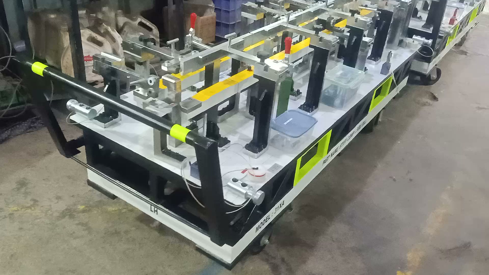

Checking Fixtures
Attribute and variable checking solutions for stamped, molded, machined and assembled parts.
ExploreAUTOMOTIVE CHECKING FIXTURES / MADE IN INDIA
EXCEL builds production-ready checking fixtures for teams that cannot afford ambiguity.
See theWhy EXCEL
That belief guides every datum, clamp, gauge and operator touchpoint. The result is a tool that fits the component, the inspection plan and the pace of production.
Core capabilities
See complete scopeAttribute and variable checking solutions for stamped, molded, machined and assembled parts.
ExploreDatum translation, clamp logic, gauge selection and access designed around your control plan.
ExploreRobust manufacture, assembly, inspection and functional validation before handover.
Explore
Production fixture / detailThe EXCEL standard
One accountable workflow
One engineering conversation from initial review through dispatch.
Part, GD&T, control plan, takt and operator context.
Datum strategy, loading sequence and inspection concept.
Machining, assembly, finishing and meticulous fit-up.
Inspection, functional prove-out and documented handover.
Have a component in development?